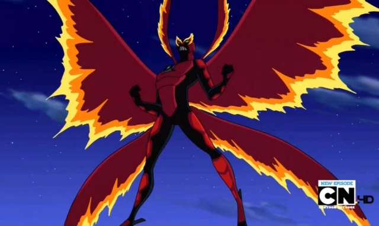

Espécie
Nome: Necrofriggiano
Corpo semelhante a uma mariposa humanoide, com asas grandes e aparência fantasmagórica.Pele azul-escura e
olhos brilhantes. São seres adaptados ao frio extremo, imunes a baixas temperaturas. Os Necrofriggianos
evoluíram para sobreviver no ambiente extremo de seu planeta, desenvolvendo corpos fantasmagóricos e
intangíveis, que não congelam. Eles vivem em cavernas e regiões protegidas, aproveitando o frio como parte
natural de sua biologia.
Planeta
Nome: Kylmyys
Kylmyys está em um inverno eterno, resultado de um evento cataclísmico que congelou o planeta inteiro em eras
passadas. O solo é coberto por geleiras imensas, nevascas constantes e cavernas profundas. A atmosfera é tão
fria que a maioria das espécies não conseguiria sobreviver lá. As temperaturas se aproximam do zero absoluto,
tornando o planeta praticamente inabitável para seres comuns. Explosões de gelo ocorrem naturalmente, criando
fenômenos perigosos e imprevisíveis. A paisagem lembra uma versão ampliada da era do gelo na Terra, mas em
escala planetária. Além dos Necrofriggianos, há também os Psycholeopterranos, outra espécie nativa de Kylmyys.
Poderes e Habilidades
Criocinese
Pode reduzir a temperatura ao redor para quase zero absoluto. Seu sopro congelante transforma vapor em gelo
sólido, capaz de aprisionar inimigos ou criar barreiras. Consegue moldar o gelo em construções complexas, como
armas, paredes ou até esculturas funcionais. Pode usar o sopro como rajada de vento sem congelar, empurrando
objetos pesados.
Intangibilidade
Atravessa paredes, portas e objetos sólidos sem esforço. Essa habilidade o torna quase impossível de capturar
em combate físico. Pode usar a intangibilidade para evitar ataques diretos, como projéteis ou golpes.
Invisibilidade
Torna-se invisível aos olhos, ideal para espionagem e ataques furtivos. Pode combinar invisibilidade com
intangibilidade, tornando-se praticamente indetectável.
Voo e Levitação
Suas asas permitem voar em alta velocidade e com grande manobrabilidade. Pode pairar no ar silenciosamente,
reforçando sua função de infiltrador.
Força e Resistência
Apesar da aparência esguia, possui força acima da média. É imune ao frio e pode sobreviver em ambientes
extremos, incluindo o espaço. Sua pele e corpo fantasmagórico resistem a ataques físicos e energéticos.
Fraquezas
Ambientes quentes reduzem sua eficiência. Usar invisibilidade e intangibilidade por muito tempo pode
desgastar. Dependência de habilidades especiais: Em combate direto, não é tão poderoso quanto aliens de força
bruta.
Forma Suprema

pt-br.ben10.wikia.com
Seu poder mais marcante: Chamas de gelo. Respira e dispara feixes de plasma frio que consomem o calor dos
objetos. Essas
chamas são tão intensas que podem congelar instantaneamente inimigos, máquinas e até o ar ao redor. Ele
descreve como “um fogo tão frio que queima”. Pode congelar grandes áreas em segundos. Consegue fazer nevar e
transformar ambientes inteiros em gelo sólido. Suas asas maiores permitem voar mais rápido e com maior
manobrabilidade. Imune a temperaturas extremas, tanto frio quanto calor moderado. Apesar de mais resistente
que sua forma normal, ainda é menos eficiente em locais muito quentes.

{kind=link}
{kind=link}